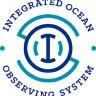
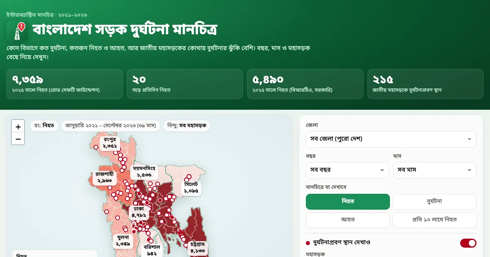
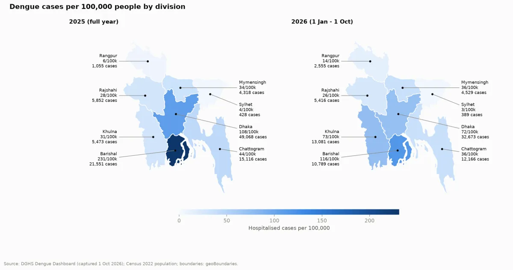

Popular on GitHub
All reposSoftware Engineer @ Adfinix · Dhaka, Bangladesh
Mehraz Hossain
Rumman
I build the backends behind real-time ad-tech: bidding, click and impression pipelines, and analytics on Django and ClickHouse. Google Summer of Code 2025 contributor with IOOS. Patches merged in Django, DRF, Scrapy, Celery and Kombu.
Developer ID

Mehraz Hossain Rumman
Software Engineer · Adfinix
Dhaka, Bangladesh · --:--
- Focus
- Backend · Ad-tech · Data
- Experience
- 4+ years
- Open source
- 7 projects incl. Django, DRF, Celery
- Highlight
- GSoC 2025 · Keynote, Hacking Limnology
- 59 repos
- 18 followers
- — stars
Now
Software Engineer at Adfinix
Building Adsloft and Aifinix: DSP/SSP tracking, OpenRTB bidding flows, and real-time analytics for advertisers and publishers. Since July 2024.
- Django
- DRF
- ClickHouse
- MongoDB
- OpenRTB
- Next.js
4+years shipping
2backends from scratch
7OSS projects patched
’25GSoC · IOOS
About
Mathematics graduate turned backend engineer. I spent my degree in programming contests, which is where I learned to care about correctness under pressure. Now I build ad-tech systems by day and contribute to the Python ecosystem I depend on. Through GSoC I shipped HTTP caching to pyOBIS, then took the work on stage as a keynote speaker at Hacking Limnology 2025. I've taught Python online since 2022.
Education
B.Sc. Mathematics
Jagannath University, Dhaka
2019 – 2024 · GPA 3.59 / 4.00
Coordinates
23.8103° N
90.4125° E
UTC+6 · open to remote
- Python
- Django
- Django REST Framework
- ClickHouse
- MongoDB
- PostgreSQL
- Go
- Next.js
- React
- FastAPI
- Docker
- Jenkins
- GitHub Actions
- OpenRTB
- scikit-learn
- Pandas
- xarray
01 — Experience
Where I've worked
-
Software Engineer Adfinix
- Built the Adsloft backend from scratch: a SaaS that tracks DSP/SSP clicks, impressions and views and generates real-time data and detailed reports for advertisers and publishers.
- Built the Aifinix backend from scratch with Django and DRF, designing scalable APIs, authentication, analytics pipelines and business logic; contributed to its frontend too.
- Designed and delivered an analytical dashboard end to end: schema design, backend aggregation and frontend visualization for real-time insights.
- Upgraded the Adfinix product from Django 3.2 to 5.1 with its dependencies, fixing bugs and optimizing hot paths along the way.
- Implemented CPM and frequency capping, built rich media ads and resolved API issues across the platform.
- Worked with OpenRTB for real-time bidding and built a mock server to test DSP and SSP request-response interactions.
- Used MongoDB for high-volume event and analytics data, wrote a Slack bot for internal automation, and built the Adsloft marketing site in Next.js.
- Django
- DRF
- ClickHouse
- MongoDB
- Next.js
- OpenRTB
- Docker
- Jenkins
-

Google Summer of Code Contributor IOOS
- Implemented HTTP-level caching in the pyOBIS Python package using requests-cache, with cross-platform cache paths, unit tests and docs. Every PR merged upstream.
- Built a seagrass habitat analysis notebook combining OBIS and GBIF occurrences with environmental variables: One-Class SVM anomaly detection, temporal analysis and Species Distribution Model mapping.
- Keynote speaker and workshop instructor at Hacking Limnology 2025 on pyOBIS and marine ecological modeling.
- Python
- requests-cache
- Pandas
- scikit-learn
- xarray
- Jupyter
-
Online Python Trainer
- Teach Python from beginner to intermediate level, with a focus on debugging, reading errors and problem-solving.
- Introduce core data structures and algorithms; run weekly exams and coding challenges to track progress.
- Python
- DSA
- Mentoring
-
Trainee Software Developer TrendBreaker
- Built a desktop application with PyQt5, and a React Native mobile app backed by Django.
- Worked on data analysis projects to support business decisions.
- PyQt5
- React Native
- Django
- Data analysis
02 — Projects
Things I've built
Library · Go
GoRTB
A full OpenRTB 2.5 implementation in Go: type-safe bid request and response structs, validation, and fast JSON serialization for real-time bidding systems.
- Go
- OpenRTB 2.5
- Ad-tech
Middleware · Python
fastapi-observer
Zero-boilerplate structured logging and observability for FastAPI. Pluggable storage backends (in-memory, JSON, SQLite), filtering, and a built-in dashboard for browsing events.
- Python
- FastAPI
- Observability
Work · Adfinix
Adsloft
SaaS tracking DSP/SSP clicks, impressions and views with real-time reporting. Backend from scratch; ClickHouse for event analytics; marketing site in Next.js.
- Django
- ClickHouse
- Next.js
Work · Adfinix
Aifinix
Ad-tech platform backend: scalable APIs, auth, analytics pipelines and an end-to-end analytical dashboard over high-volume MongoDB event data.
- Django
- DRF
- MongoDB
Research · GSoC
Seagrass Habitat Analysis
Notebook merging OBIS and GBIF occurrences with environmental layers: One-Class SVM anomaly detection, temporal trends and SDM maps. Taught as a workshop at Hacking Limnology 2025.
- scikit-learn
- xarray
- SDM
Full-stack
KachaMorich
E-commerce app: accounts, purchasing, payments, profiles and order reviews for customers; user and product management, role promotion, and order status controls for admins.
- Django
- React
- PostgreSQL
Academic
DSP with Fast Fourier Transform
Digital signal processing study applying the FFT to analyse and filter signals, built during my mathematics degree.
- Python
- NumPy
- Signal processing
Notebook · Colab
pyOBIS Workshop Notebook
Hands-on Species Distribution Modeling with OBIS data, as run for the Hacking Limnology 2025 workshop. Open it in Colab and run end to end.
- Python
- pyOBIS
- Jupyter
03 — Data analysis
Public data, cleaned and mapped
Open, reproducible studies of Bangladesh built from government reports and press data. Every row keeps a link to its source.

Live mapJupyter · Road safety2021 – 2026
Bangladesh Road Accidents
Road Safety Foundation and official BRTA monthly reports, transcribed from scanned PDFs, checked against each report's totals and analysed by year, vehicle, division and season. Ships with an interactive Bangla map of all 64 districts and 215 accident-prone highway spots.
- 7,359
- road deaths in 2025
- 36%
- of them on motorcycles
- +26–51%
- deaths per day during Eid travel
- pandas
- matplotlib
- seaborn
- Leaflet
- Jupyter

NotebookJupyter · Public health2000 – 2026
Dengue in Bangladesh
Where dengue strikes, how the hot zones shift and who dies. Joins DGHS surveillance, district case counts, census population and climate data into hotspot maps, case fatality rates, seasonality and temperature-lag correlations.
- 116,990
- cases in 2026, second-worst year
- 3.8×
- Barishal vs national rate, 2025
- ~2×
- fatality rate for women vs men
- pandas
- GeoPandas
- NumPy
- matplotlib
- Jupyter
04 — App development
On the Play Store, and on the way
One app live on Google Play and two more in active development.
Live on Google Play
Strat Roulette
Spin the wheel and get an alternative strategy to shake up your next match. Supports CS2, Rainbow Six Siege, Fortnite, Overwatch and PUBG.
- Android
- Gaming
- Published
In development
Becho
A business toolkit for merchants and small business owners: track sales, inventory and customers from a single app.
- Android
- Merchants
- SMB
In development
Nirbhor
A medicine alarm app that reminds you and the people you care for to take the right dose at the right time.
- Android
- Health
- Reminders
05 — Web scraping
Turning websites into datasets
Crawlers and extraction pipelines that ship clean, structured data from messy sites.
Client · 24baba.com3,700+ listings
Car listings & images
Scraped 3,700+ car listings with full specs and every photo, normalised into a clean dataset ready to import into the marketplace.
- Python
- Image pipeline
- Deduplication
Combat sports7 sources
Fight results database
Event, bout and fighter results across five disciplines, unified into one schema from sites with very different layouts.
Healthcaredataset
Medicines catalogue
Drug names, generics, manufacturers, dosage forms and prices collected from pharmacy and regulator sites into a searchable catalogue.
- Python
- Structured data
- Pharma
06 — Open source
Patches in the tools I use daily
pyOBISfeature
HTTP caching layer, OS-specific cache paths, docs and tests. Delivered through GSoC 2025.
DRF-extensions6 PRs merged
Test fixes, cleanup and version upgrades across the Django REST Framework extension set.
Scrapy3 PRs merged
Test fixes and cleanup in the web-crawling framework.
Djangopatches
Minor improvements and patches. Listed among first-time contributors in Django News.
Django REST Framework3 PRs merged
Django 6.0 support, a fix for ListSerializer breaking on unique-constraint validators, and Django 4.2 support docs. The toolkit that powers most of my day job.
Celerybug fixes
Bug fixes and enhancements to the distributed task queue.
Kombu3 PRs merged
Redis transport fixes: a sentinel_fanout_compat option for mixed-version Sentinel clusters and replacing the deprecated ZREVRANGEBYSCORE with ZRANGE BYSCORE REV.
07 — Skills
What I reach for
Languages
- Python
- Go
- SQL
- C
- C++
- Fortran
Frameworks
- Django
- Django REST Framework
- FastAPI
- Next.js
- React
- React Native
- PyQt5
Data stores
- PostgreSQL
- ClickHouse
- MongoDB
Infrastructure
- Docker
- CI/CD
- GitHub Actions
- Jenkins
- Git
- Bitbucket
- OpenRTB
ML & analysis
- Pandas
- NumPy
- scikit-learn
- xarray
- matplotlib
- folium
- SVM / One-Class SVM
- Random Forest
- Regression
- Species Distribution Modeling
Mathematics
- Linear algebra
- Calculus
- Fuzzy mathematics
- Data structures & algorithms
08 — Competitive programming
Contests & hackathons
Specialist on Codeforces as keai33 · 3★ on CodeChef · problems on LeetCode and HackerRank.
- ChampionJnU Intra-University Programming Contest (solo) · 2021
- ChampionKYAU National Hackathon · Team Quantum Guys
- Hon. MentionICPC Dhaka Regional · 2021
- 11thUITS Inter-University Programming Contest
- 46thCoU Inter-University Programming Contest · Team JnU_Team_Z
- 49thBUET Inter-University Programming Contest · Team JnU_ABC
09 — Talks & writing
Said out loud
Keynote
LinkedIn
Report
pyOBIS and marine ecological modeling
Hacking Limnology 2025, with a hands-on Species Distribution Modeling workshop.
ArticleMarine Life Meets Python: A guide to pyOBIS
Medium · May 2025
ArticleHow I, a Math Grad, Cracked GSoC 2025 at IOOS
GSoC 2025 Final Report: pyOBIS for stakeholders
GitHub Gist
10 — Teaching & mentoring
Teaching programming & AI
One-on-one sessions across time zones — from first lines of code to contest algorithms to putting AI to work in a product team.
Programming
2 students · United States
Taught programming from the ground up: language fundamentals, problem decomposition, and building small projects end to end.
Competitive programming
4 students · Bangladesh
Coached data structures, algorithms, and contest strategy with weekly problem sets and upsolving on Codeforces-style problems.
AI consultancy
Project manager · United States
Advised on where AI and LLMs fit in a product roadmap, how to scope pilots, and how to evaluate results before committing.
11 — Contact
Let's build something.
Backend roles, freelance projects, open-source collaboration, or a question about GSoC. My inbox is open.
Intro — watch on YouTube